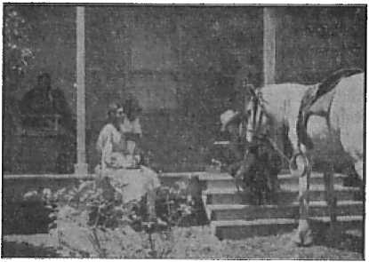
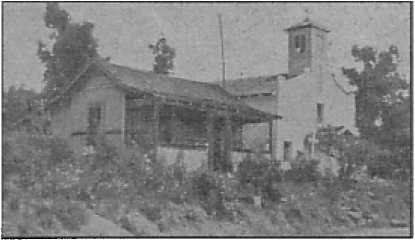
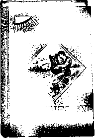

Japan Inspired by the Devil
A hundred-year plan of conquest
Vatican Support of Fascism
How can man gain it in happiness?
Demonism and Ignorance
Five Cents a Copy One Dollar a Year
Vol. XXIII No. 585 February 18, 1942
$1.25 In Canada and Foreign Countries
Published Every Other Wednesday
Contents
Japan Inspired by the Devil (Part 1)
God, Emperor, and High Priest
The Religion Racket in Japan
Plans for World Dominion
One of the Devil’s Theocracies
A Hundred-Year Plan of Conquest
Many Saw It Coming
Under the Totalitarian Flag
Even the Palace Is Worshiped
Papal Intrigue and Diplomacy
Pope Benedict IX, A.D. 1033-1044
Vatican Support of Fascism
Center of Totalitarianism
Ready to Bargain with the Devil
“Thy Word Is Truth”—John 17: 17
Life
Un-American Discriminations Debarred
New Government
Mistaken Patriotism at Lowell
Spiritual Weapons Are Mightiest
Flag Salute Case in New Zealand
A Stirring Decision in Colorado
Demon Fires Near San Dimas Church
The Land of Free France
Does Tobacco Cut Life?
British Comment
Demonism and Ignorance
‘The Ears of the Deaf Unstopped’
Published every other Wednesday by WATCHTOWER BIBLE AND TRACT SOCIETY, INC.
117 Adams St., Brooklyn,,N. Y., U. S. A.
Editor Clayton J. Woodworth
Business Manager Nathan H. Knorr
Five Cents a Copy
$1 a year in the United States
|1.25 to Canada and all other countries
NOTICE TO SUBSCRIBERS
Remittances: For your own safety, remit by postal or express money order. When coin or currency is lost in the ordinary mails, there is no redress. Remittances from countries other than those named below may be made to the Brooklyn office, but only by International postal money order.
Receipt of a new or renewal subscription will be acknowledged only when requested. Notice of Expiration is sent with the journal one month before subscription expires. Please renew promptly to avoid loss of copies. Send change of address direct to us rather than to the post office. Your request should reach us at least two weeks before the date of issue with which it is to take effect. Send your old as well as the new address. Copies will not be forwarded by the post office to your new address unless extra postage is provided by you.
Published also in Afrikaans, Bohemian, Danish, Dutch, Finnish, French, German, Greek, Hungarian, Japanese, Norwegian, Polish, Portuguese, Spanish, Swedish, Ukrainian; also special Australian edition in English.
OFFICES FOR OTHER COUNTRIES
England 34 Craven Terrace, London, W. 2
Canada 40 Irwin Avenue, Toronto 5, Ontario
Australia 7 Beresford Road, Strathfield, N.S.W. South Africa 623 Boston House, Cape Town
Entered as second-class matter at Brooklyn, N. Y.» under the Act of March 3, 1879.
Notanda
German, Italian and Japanese Aliens Must Register
♦ Regulations, issued under authority of the Presidential proclamation of January 14, 1942, require all German, Italian and Japanese aliens to apply at the nearest first- or second-class, or county seat, post office for a Certificate of Identification. The requirement applies to all enemy nationals 14 years of age or over who have not yet taken the oath of allegiance before a Federal judge as the final step in acquiring American citizenship. All of these applications must be filed before the end of February. Failure to comply with this regulation may result in internment for the duration of the war.
The regulations require the furnishing of a photograph of the applicant, which is to be attached to an identity card that will be furnished by the Government. The Certificate of Identification will also bear his index fingerprint and signature. He will thereafter be required to carry the certificate at all times.
Before actually applying for the certificates, aliens are urged to obtain from any post office (or neighborhood agency) printed instructions on how to file applications for certificates of identification, which may be obtained by him personally or by a relative or friend.
Draft Registration
♦ The United States Government has amended Selective Training and Service Act requiring all male citizens between the ages of 20 through 44 to register. All men of such ages and whose birth occurred between February 17, 1897, and December 31$ 1921, who have not heretofore registered, must go to the designated place of registration where they are on February 16, 1942, and register.
CONSOLATION
“And in His name shall the nations hope.”—Matthew 12:21, A.R.V.
Volume XXIII Brooklyn, N. Y., Wednesday, February 18, 1942 Number585
Japan Inspired by the Devil (In Four Parts—Part 1)
THE Japanese recently celebrated 2,600 years of empire. There is still an older empire, that of Satan, of which he has held the rule more than twice as long as Japan. And there is still an older empire, which has existed from the beginning of creation, and will forever exist, and which will come into its own in the earth at Armageddon, Jehovah’s everlasting kingdom.
The newspaper Niroku said solemnly, “The Imperial Family of Japan is as worthy of respect as is God, and is the embodiment of benevolence and justice.” Then the paper went on to say “The Imperial Family” is the parent of all mankind on earth; and with equal solemnity this is just to say that no bigger falsehood could be told. The mikado is just an ordinary man, a sinner condemned to death, and without any hope of eternal life except in God’s appointed way through Christ.
Every year thousands of school children worship at the shrine of the mikado. Their schoolbooks are carefully prepared to instill into their minds the conviction that the emperor is a god. The theaters, the movies and the story-tellers do the same. Thus the colossal mistake becomes a religion, that the emperor can not err, nor the nation do a wrongful act, nor any of the emperor’s-servants devoted to the doing of his will. This begets in the Japanese unthinkable pride.
The Japanese are taught that their mikado is a direct descendant of the first god-king of Japan, Jimmu Tenno, that he is above criticism and is accountable to no one except his ancestors. Lieut. Col. Aizawa testified on the witness stand in a murder trial in Japan, “The Emperor is the incarnation of the God who rules over the universe. Democracy is all wrong.” The same account explains that the emperor on 21 occasions each year “appears before the ancestral shrines and performs acts of worship which take us back to the beginnings of human history”. How very true!
When the emperor’s car passes, all blinds must be drawn and no one may remain on balcony, roof or doorstep. When a tire blew out on the way to the station the chauffeur committed suicide, as an act of penitence. When a Japanese mayor found he had given his son the same name as that given to the emperor he resigned and killed himself in atonement.
God, Emperor, and High Priest
Self-sacrifice to the Tenno is inculcated in every Japanese from childhood onward. The emperor neither drinks nor smokes, and, though he lives in a palace, yet in his trip around the world he marveled at the extravagance shown at Versailles. He shaves and dresses himself, worships the spirits of his ancestors, and sits down to a breakfast of fruit, oatmeal, ham and eggs, toast and coffee. It would all be indescribably funny if there were not some 90,000,000 people that have become hypnotized into thinking he is a god. His own blood brothers are what?
No common person may touch the emperor. His barber and dentist must wear silk gloves when working on him, and his tailor actually fits the emperor’s clothes to another man of the same stature. The story is current as truth in Japan that on one occasion a schoolboy rushed into a blazing room to rescue the emperor’s picture, found he was unable to escape, ripped the picture from the frame, gashed his abdomen with a sword he snatched from the wall, stuffed the picture therein and died in the flames with the precious portrait in his body. This boy is now one of Japan’s national heroes ; and that is the spirit that actuates Japan.
The emperor is fond of vegetables, and the world’s very best gardeners see that none but perfect products reach his table. When he is on a tour the vegetables are sent to him every day in refrigerator cars. Pretty soft, being a god; isn’t it?
When a new ambassador is received by the mikado he advances into the presence alone, bows three times, and reads his letter. The emperor reads his reply and speaks through an interpreter, who must keep his eyes on the ground and whisper. The new ambassador then bows again three times and departs backwards. Readers will remember that when Myron Taylor was admitted to see the pope he also bowed three times. This kind of business burns an American up. He can’t understand it.
On one occasion the emperor visited the Kiryu Technical College. The police inspector became nervous, took the wrong road, and landed the party at the college thirty minutes before they were expected. The emperor did not travel over a road first swept, purified, sanded and guarded and did not see persons fittingly garbed for a royal visit. As a result of his error the police inspector, as a matter of course, cut a gash in his own neck four inches long, i.e., tried to kill himself in atonement. The people expected it, but the emperor didn’t want it.
Hirohito and the Demons
All the ancestors of Hirohito are as dead as cobblestones; but he does not know that, so once a year he is supposed to go into “the innermost sanctuary to worship his divine ancestress”. He did that recently, and after he came out the Japanese Home Minister explained to 3,000 teachers thus: “Dynasties in foreign countries were created by man. Foreign kings, emperors and presidents are all created by men, while Japan has a sacred throne inherited from the imperial ancestors. Japan’s imperial rule is therefore an extension of heaven. The dynasties created by men may collapse, but the heaven-created throne is beyond men’s power.” The Japanese people recognize 8,000,000 deities, i.e., demons. It is from these that the ancestors of Hirohito received the Japanese throne and, while he may not know it, it is these that he worships when he goes into “the innermost sanctuary” once a year.
As showing the grip this has on the people, a writer in the New York Times says:
The Japanese never use the Imperial name. If implication does not suffice, they simply say: “Tenno”—the Chinese-borrowed phrase, “Son of Heaven.” In their quiet manner, by looks only, one’s Japanese associates let it be known that their emperor-worship is something on a different plane from anything known in the Western world, something so genuinely a part of their souls that one could no more be frivolous about it than about a child’s worship of its mother. Here is a tenderness and respect fundamental somewhere in the depths of humanity.
Likewise one accepts the kneeling fidelity of thousands who, after an all-night vigil, never raise an eye to the bespectacled figure riding past them in the closed carriage for which they have waited. The foreigner willingly puts down his umbrella in the rain, and as often as not surprises himself by kneeling also, although uncompelled, at the last minute.
In other words, that reporter himself probably committed what he well knew was an act of idolatry merely because of the generally reverential, religious attitude of the masses of the people.
The note of his religion was in Hirohito’s declaration of war; for in it he mentioned his “great illustrious imperial grandsire” and his “great imperial sire”, as was to be expected. The Japanese people hold that the line of emperors is the connecting link between them and heaven. In his proclamation he mentioned that he was “seated on the throne of a line unbroken for ages eternal”. That’s stretching at the front end; 2,600 years are not “ages eternal”. Shortly his reign will end in something that will be eternal, however, i.e., eternal destruction, from an angry God at Armageddon. Jehovah’s witnesses have suffered in Japan, and Jehovah will require it at the hands of Hirohito.
Birth of the Crown Prince
When the forty weeks of waiting for the crown prince to arrive drew to a close the empress donned a girdle of plain unbleached silk, four yards long, after it had been consecrated in the presence of the emperor and high court officials, and the event was duly reported to the imperial ancestors, who were dead as doornails and didn’t know anything about it either before or after it w’as reported.
When the crown prince arrived all Japan was glad and 35,000 convicts and prisoners had their sentences reduced by as much as one-fourth. The “gods” had been asked that it might be a boy, and it was! The chances were fifty-fifty; for girls come along in about the same number as boys, don’t they?
After seven days Emperor Hirohito placed in his infant son’s hand several names, selected by the court historian, so that the “son of heaven” might have a suitable cognomen. The youngster picked his name, and it turned out to be Tsugu-nomiya Akihito, which means “The wise and successful prince”. It is a doubtful appellation, in view of the near approach of Armageddon. When he was three months old he Was presented formally to 123 of his ancestors; and, as “the dead know not any thing” (Ecclesiastes 9:5), much good it did to either them or him!
Honolulu papers were as much excited about the birth of a crown prince as those in Japan itself. American army officers sometimes say of the Hawaiian Islands that in time of war it may be necessary to capture them; most of the inhabitants are Japanese.
When the crown prince marries he is expected to choose a bride from some one of the thirteen princely houses of Japan. In his youth, and for his entertainment in the palace grounds, in a single summer more than 20,000 fireflies were turned loose. It’s a pretty soft job, being a crown prince. The fireflies are gathered by striking their habitat, usually a tree, a sharp blow with a club, shocking them from their perch to the ground. The picker picks them up, stuffing them into his mouth until he has a substantial mouthful, when they are taken to a common receptacle. Fireflies, placed in transparent receptacles, are used in tea gardens for decorative purposes.
It used to be the rule (and may be yet) that at three years of age the crown prince is put in a separate palace by himself, with a retinue of attendants, of course, and that in order to enter the presence of the emperor he must enter the throne room through a side door and crawl into the presence of the emperor on his hands and knees. What a contrast with the way the American youngster enters the presence paternal which is every whit as important in the eyes of Almighty God as that of Emperor Hirohito.
The Religion Racket in Japan
Those who think what the world needs is more religion should take a little time to consider Japan. If Hitler were to be crowned as an emperor he would certainly claim to be ruling by divine right, for he often mentions his god, which god is the Devil. But in Japan all the school children are taught, and all the Japanese people are supposed to believe, and most of them do believe, that they alone, of all peoples in the earth, have a line of rulers that descended direct from the gods (demons, devils) and that they alone, therefore, have the right to rule the earth. Here are some of their pronunciamen-tos:
Now it is our oldest and strongest belief that the empire of Japan was originally entrusted to her descendants by Amaterasu-no-mi-kami, known as the Sun Goddess, with the words: “My children, in their capacities of deities, shall rule it.” This was the origin of the Imperial family. This national belief of old is called “Kanagara”, which is, we believe, peculiar to Japan and will be found nowhere else on earth. The phrase “Kanagara” means to “follow the way of the gods” or to possess in one’s self the “way of the gods”. For this reason, or in the same sense, the country of Japan, since heaven and earth began, has been a monarchy and it will be continued thus for ever and ever. From the remote time when our imperial ancestor first descended from heaven and ruled the land, there has been great concord in the empire, and there has never been any factiousness toward the throne.—Professor Bunichi Horioka, foreign-educated Japanese scholar, in an address in Tokyo to an audience consisting mainly of Europeans and Americans.
American statesmen have to holler, “Give us more religion” (on top of the 210 sects that advertise themselves as Christian), but in Japan the people are saturated with it, not knowing anything whatever about the one and only true God, Jehovah, Creator of heaven and earth, but tied down to prostrating themselves before the demons, devils, to whom almost all the so-called “worship” of the world of mankind really goes. Every sect that teaches or stands for either “purgatory” or “eternal torture” is doing that very thing.
Plans for World Dominion
The Scriptures are perfectly plain that the government of the world shall rest forever on the shoulders of Christ Jesus, and that by the appointment of Almighty God, who is the Supreme Ruler over all His universe. See Consolation No. 571, page 2, or look up the scriptures themselves : Matthew 6: 9,10; Luke 19:12; Luke 17: 20; Haggai 2:7; Daniel 2:44; Psalm 72:7; Isaiah 9:7; Isaiah 2:4. As Jehovah’s Field Marshal, Christ Jesus will destroy all Jehovah’s enemies at Armageddon, now impending. The Japanese have other ideas, other plans and purposes.
July 25, 1927, the then Japanese premier, Baron Giichi Tanaka, presented to the mikado a plan for first conquering Manchuria, then China, then India, then all Asia, then war with the United States, then the conquest of the Pacific, and ultimately of the whole world. In the New York World-T eleg ram, December 9,1941, the American Admiral William Philip Simms stated that the present Premier To jo of Japan was coauthor of this plan for world domination. Incidentally, this same Tojo, in the same paper, date of December 29, 1941, was reported to be about to make a 500-mile round trip to tell the goddess Ameratsu that the long-projected war with United States and Britain is under way. It seems that the old lady had to wait 23 days to learn about it from his lips. Some goddess!
On January 17, 1939, in an appeal to the League of Nations, Dr. Wellington Koo, of China, told the council that Japanese militarists were aiming, at the complete conquest of China and the subjugation of all of Asia. Then, he asserted, the military faction now in control in Tokyo hopes eventually to achieve world domination by making use of the vast resources and manpower of the Far East.
General Sadao Araki, former Japanese Minister of War, in a speech made several years ago, said: “The whites have made the nations of Asia objects of oppression, pure and simple. Imperial Japan cannot and ought not to let their impudence go long unpunished. Our country is determined to propagate its national ideal across the seven seas, to extend and expand it over the five continents of the earth, even if it is necessary to use force to do so.”
Unpublished Regulations
What goes on in the inner councils of Japan’s military officials remains hidden, but when the murderer Aizawa was on trial his counsel, Dr. Somei Uzawa, made the statement: “The principles underlying the supreme command in Japan differ from those of foreign countries. The prestige of the imperial structure and the loyalty of the imperial army are unparalleled abroad. The army maintains unpublished regulations, which are only the strongest emphasis on the rights of the supreme command.”
All right, if the inside army teachings may not be published, here are two selections from Japanese readers, edited by the Japanese Ministry of Education. The first selection, which is entitled “Citizens’ Ambition”, is from the New National Language Reader, Vol. 6, Lesson 28, published by San Tin Tang, and the second selection, “The Pacific Ocean,” is from Reader for Higher Primary, Lesson 32.
What shall Japan contribute to the world? All Japanese must awaken to their duty to execute the Divine Punishment. By attacking or by punitive treatment, the powers of the world must be broken down in order to fulfil the Divine Mission of Japan. Some day, when, having swept away all rottenness and subjugated all arrogant and impolite countries of the world, Japan shall be the King of the world and lord over the whole universe.
The King of all oceans, you Pacific Ocean! How proud is your beautiful water! Washing the shores of North and South America to the east, touching the sandy beaches of Asia and Australia to the west, reaching the continent around South Pole to the south and meeting the Arctic Ocean to the north, you measure ten thousand miles from north to south and eleven thousand miles from east to west and occupy an area covering one third of the earth’s surface. Japan situates on the west. We must live up to this unsurpassable honor and possess an ambition as big as this Pacific Ocean. Going in and out the extensive shores, we must take with our own hands this heavensent treasure.
More Accursed Devilish Religion
The path of Japan is traced by the gods and cannot be changed. Our mission is divine. If the gods have destined Japan to rule the world, Japan will rule the world. Our steps in our march forward are not controlled by minorities nor by majorities in the Parliament; they are directed and controlled by the gods, by our ancestors who also were gods like all Japanese are gods.—General Minami, commander in chief of the Japanese Army in Harbin, September 20, 1935.
On March 22, 1896, the then King Oscar II, of Sweden, wrote a letter to Prince Adam Wiszniewski, of Paris, of which the following is a translation, published in the New York Times of November 29, 1931. It shows that almost fifty years ago here was a real statesman who knew a lot more of what is a stateman’s business than a lot of people living today who think they are statesmen and are nothing but politicians, and exceedingly poor politicians at that. King Oscar said:
The expansive force of Japan, the patriotic energy of the people, the “savoir-faire” of the government, the meritorious organization of its military and naval forces, the bravery and admirable devotion of its troops, guided by officers of the army and navy, equally instructed and determined—all this has impressed me exceedingly. One will have to reckon with that Asiatic country, that, up to now, we have underestimated, and I cannot help a feeling of fear and anxiety, thinking of the dangers for a surfeited European civilization which shall come from the Pacific side of the ocean.
Something tells me that a bloody conflict will some day occur, upon which, probably, will depend the lot of Europe; the Occident will succumb to the Orient, where one may already see daily more clearly the strong race of the future, organizing and preparing itself for the great struggle of the future. It is to be hoped that I foresee too darkly and that the future will be better, but at my age one has lost many illusions.
Yours affectionately,
Oscar.
This Devilish Kodo Business
Ken magazine started out bravely to try to tell the truth, but it could not get any advertisers to stay with it on that basis, and so gave up the fight and, after a vicious attack on Jehovah’s witnesses, expired, as was its due. But on July 14, 1938, under the title “Kodo Rules Japan” and the subtitle “Politics fuses with religion in a fantastic scheme of divinely-inspired Imperialism which teaches that the Mikado, Heaven-born, will rule all the earth”, it had a very interesting story, from which brief extracts appear below:
To know Imperial Japan, know “Kodo”. That is the key word of the Samurai warrior spirit, a word ever on the tongue of the warlords. Kodo has a deep and vital meaning. Every edict of the few years following the Meiji imperial restoration in 1868 contained it. Its import was impressed upon the masses of the Japanese people. “The divine ancestors,” said the interpreters of Kodo, “have performed their duty as prescribed by the AVill of Heaven in uniting political administration and religion and in bringing unity of heart between ruler and ruled. This is the supreme Kodo, incomparable in the whole world. But since the intrusion of foreign religions into the country, and the effect of them upon the shallow-minded multitude, Kodo has lost some of its former influence. However, now the destiny of Heaven has brought about the Restoration, though unhappily it has been accompanied by only an imperfect restoration of discipline and culture among the people. Yet with the unification of religion and political administration consequent upon the revival of Kodo the people ought to venerate the foundation of the Divine Empire by Our Heavenly Ancestors, reflect on their duty to it, and resist any temptation to follow alien opinions.”
The intent of the military-supported Government is clear. At any cost Kodo must be revived. The ancient code taught that no sacrifice was to be shirked. The Heaven-born empire under the guidance of its divinely-ordained sovereign must not hesitate short of world dominance. Having, as one leader of the Restoration period declared, “annexed all neighboring countries and then proceeded to the conquest of India,” the next aim would be “The Five Continents” themselves. Fantastic as all this appears, it pictures accurately the spirit of the Japanese militarists.
On August 3, 1935, the Japanese government, which was never anything more than a front for the Japanese army, made the following declaration regarding the so-called “Constitution” of Japan, and which statement shows that that constitution has no real meaning whatever:
The national policy of Japan is clearly revealed in the divine message that the Sun Goddess gave her grandson, the first emperor, on his advent in Japan. Japan is ruled by an unbroken line of emperors and the prosperity of the imperial line is coeval with heaven and earth.
When the Constitution was promulgated Emperor Meiji proclaimed, “We inherit supreme rights from our ancestors and transmit them to our descendants.” Article 1 of the Constitution provides, “The Empire of Japan shall be reigned over and governed by a line of emperors, unbroken from ages eternal.” It is therefore clear that supreme power rests with the emperor.
One of the Devil’s Theocracies
The mimic god, Satan, the Devil, has always governed by making use of mimic theocracies, and in Japan he has one that, next to the Roman Catholic Hierarchy, has the rest of them beaten to a standstill. Here is a good place for insertion of some choice paragraphs from the pen of that excellent reporter, Otto D. Tolischus, which appeared in the New York Times Magazine, September 7, 1941. The whole article is extremely interesting, but a few extracts must suffice to establish the point that the Devil himself is back of this whole Japanese religion and government:
Distant as a god, near as a father, Hirohito the Tenno-emperor is to every Japanese, except the few who have fallen into materialistic heresies, the center of temporal and spiritual life. As such he receives divine worship and filial affection. His rule is “coeval with heaven and earth,” and in comparison with him all other rulers in the world are either usurpers or mere temporal governors. He is above human judgment, and even discussion of him is a kind of blasphemy. No human dares to look down upon him.
Virtually every Japanese household of whatever religious persuasion, except the few that are Christian, has two altars or shrines. The first is placed higher than the second and it contains not an image but only a symbol of divinity like the mirror dedicated to Amate-rasu Omikami, the “heaven-shining, great, august deity” or sun-goddess. The other is dedicated to Buddha and contains his familiar statuette.
Last spring 14,976 soldiers and sailors were deified with solemn ceremonies in the presence of the emperor and 30,000 bereaved relatives, raising the total of those deified to 208,776. A like ceremony for deification of 15,000 more has been decreed by the emperor for October 16 to 21. The closest approach in the West to this observance is the consecration of the Unknown Soldier.
The Shinto cosmogony conceives of the universe not as being created and static but, as being born, and therefore growing and developing like any other living organism, which means progressive change. All the religious cults and philosophies have, of course, their own dogma and theology which is expounded by as many sects as divide religions in the West. But to the average Japanese they blend into a more or less unitary concept which may be summed up about as follows:
The Japanese Islands are the hub of the universe and the Japanese people are all born of gods, of which the greatest is the divine mother, Amaterasu Omikami. Her grandson was sent down to earth to rule the Japanese Islands. From this grandson of heaven are descended all the later Tenno-emperors in direct unbroken lineage, which is their title to divinity and to the throne and the basis of their theocratic rule.
On that basis rests Japan’s “peerless polity” —a theocracy in secular garb—which is now advanced as a model for the world.
A Hundred-Year Plan of Conquest
Reverting again to the Ken magazine ; perhaps you can get hold of a copy of the issue of November 3, 1938, and read the story by John Webster. The main title is “The Cute Little Tiger Cub”; then follows a picture of General Tanaka, and the subhead reads: “Almost a century ago the Japanese. Lord Hoffa outlined the nibbling-off policy by which Japan was eventually to swallow the world. In 1918, General Nonaka said that peace will come only when the whole world is under. one government. Japan plans to bring about such peace. Her department stores already display models of her coming war with the United States. Some people still think they’re toys.” Some of these paragraphs will make you sick at your stomach when you realize that they were in print for all to read more than three years ago:
Only a thorough weighing of England’s position, and the certainty that she—and therefore the United States—would suffer almost any insult in order to postpone a fight, gave Japan confidence enough to proceed with her current arrogant attempt in China.
Two factors influence this English and American attitude. The first is the knowledge that as soon as England becomes involved in Asia, Germany will attack Russia and the often-averted world war—for which everyone is preparing—will be on. The second factor is the desire on the part of the imperialistic foreign office experts of England, France, and America to divide China into two or more distinct political units, so that she may be more easily handled after Japan is disposed of.
The only hitch there is that China is at last unified, by Japan’s attack.
This possibility was not quite taken into account in Japan’s well-known hundred-year plan of conquest. In 1918, General Nonaka wrote:
“Peace that every man wants will not come until the world is under one central authority. Two new tendencies will follow the World War: a great race in military preparations and a strong denunciation of war.
“Peace will come when the whole world is under one government. The world tends toward this at present. Each existing nation was produced by the conquest of many tribes, and when its central power is strong peace prevails within it. In Japan this is true. The ultimate conclusion of politics is the conquest of the world by one imperial power. The Japanese nation, in view of her glorious history and position, should brace herself to fill her destined role.”
If this is not conclusive enough, there is the Tanaka Memorial. The Japanese, of course, have denied its authenticity, but this reputed forgery has been strangely prophetic.' It has predicted every move Japan has made since that time; and so it becomes an interesting document to study for future probabilities. One of the many Korean clerks whom Japanese smugness allowed to be employed in their governmental offices came upon a document which General Baron Tanaka is claimed to have submitted to the emperor in 1927—a plan for a century of aggression. This clerk found its implications so shocking that he made a copy of it, and fled to China, where it was published immediately. It proposes not only every move which Japan has since made, but, in addition, plans the conquest of all Asia and the islands of the Pacific (including Australia) as a final preparation for Japan’s “hegemony over the entire world”. The Japanese denial of its authenticity, of course, followed at once, but one must remember that the Japanese word is of little value in international affairs.
Japan, smiling, fawning, obsequious—or vain, boastful and arrogant, as the occasion seems to demand—presents a figure in a high silk hat with a trench helmet underneath, and a frock coat with hand grenades concealed under the tails.
Japan in modern times has engaged in three major military adventures—the two wars with China and the one with Russia. Not once did she enter a formal declaration of war. Her favorite method is to attack an entirely unsuspecting port at night and accomplish her kill before the victim knows he has an enemy. If this happens to us there will be no excuse.
Many Saw It Coming
Many able men saw this coming. One of these was General Smedley D. Butler, now deceased. He put it mildly in an address at Fort Wayne, February 4, 1933, when he told of confidences given him by Japanese officers under the influence of liquor during the Boxer rebellion in China in 1900. They told him it was their purpose to set up a tremendous Oriental empire with themselves at the head of it; that in order to do that they must have war, and that they were then preparing for that war.
In the New York Times, April 6,1941, Otto D. Tolischus, then in Tokyo, wired that authoritative Japanese spokesmen had set forth their purposes to create a “New Order” in which the entire world is to be divided among the big powers, with Japan at the outset to have all the territories between the date line, the 180th meridian, and the Arabian Sea, containing somewhat less than half the human race.
Quite remarkably, and quite out of harmony with other writers not so observant, and with less experience, Tolischus, who was expelled from Germany because he saw and told too much truth about the Hitler regime, says:
Far the most striking impression that imposes itself on the observer able to compare conditions in Germany and Japan is that after ten years of more or less continuous hostilities, despite the complaints of foreigners and of Japanese themselves, Japan still lives in relative ease and abundance as compared with Germany—for that matter, Russia—and that the full rigors of a wartime regime and “planned economy” must still be realized in Japan.
In his book Challenge: Behind the Face of Japan the author, Upton Close, said: “Providence calls on Japan to undertake the mission of delivering humanity from the impasse of modern material civilization.”
The London Daily Telegraph, November 25, 1937, told of a parade of 80,000 young men in Tokyo, in a sea of waving German, Italian and Japanese flags, and accompanied by a broadcast in which Mr. Nagai, Japanese Minister of Transport, said, in part:
The Sino-Japanese conflict is for us a holy struggle which aims at calling the Nanking Government to account for its anti-Japanese attitude, freeing the Chinese people from the Red danger and guaranteeing peace in the Far East. It is a great joy to us that our friend Italy has joined the anti-Communist agreement and thus further strengthened our anti-Communist camp. The so-called principle of the status quo, through which it was previously thought possible to preserve world peace, leads today to constant contradictions and conflicts and is on the point of breaking down. The aim of our struggle today is to found world peace on the basis of a new order.
The Most Efficient War Machine
Maybe you would like to have a German view of Japanese militarism. The Vossische Zeitung, in 1931, after referring to the lies told to the League of Nations by the Japanese government, said, in part:
It is easy to explain the independence of Japan’s armed forces in the face of the Japanese Government. But it is necessary to go back as far as the period when Japan was a bit of Asia, remote, self-contained, ruled not by her sovereign—leading a shadowy existence —but by a 'shogun’. For generations the military caste has ruled. When Japan modernized herself, when she exchanged absolutism for modern ways, gave up the bow and arrow for the machine gun, the kimono for the uniform, one thing remained as of old. That was the independent position of the military within the State. The War Minister and the Navy Minister in the Cabinet at Tokyo are not in control of Army or Fleet. They are only the agents of Army and Fleet in the Ministry. The real Army chief is the General Staff. The real ruler of the Fleet is the Admiralty Staff. These are not even formally responsible to Parliament. They are directly under the sway of the Japanese emperor.
Or maybe you would like a glance at Japanese militarists from British eyes. Neville Whymant was a lecturer at the Military Staff College and the Imperial University at Tokyo, and in an article in the London' Evening Standard, February 27, 1936, he put it this way:
It is difficult for Europeans to realize that the modern Japanese, no less than their ancestors of fifteen centuries ago, believe ardently that they are literally descended from the gods, and that in the person of the emperor they have the veritable Son of Heaven in the flesh. A natural development from this is seen in the conviction that a Japanese can never be wrong. For muddle-headed destructiveness the Japanese militarist stands supreme. He is a destroyer simply, convinced that if in the process he, too, is destroyed he attains paradise at a single bound. Militarist Japan has no argument save that of the sword.
On February 6,1932, Admiral William V. Pratt, Chief of Naval Operations, told the House Expenditures Committee that Japan has the most efficient war machine the world has ever seen, and added, “We could never have such an organization in this country,” and gave his reasons for so thinking. Militarists of Japan do things no American would do. The Sunday Worker tells of a recruit that showed up a few minutes late because both parents were sick and he was trying to make some provision for them while he was away. He apologized. The apology was not accepted. He was investigated. His employer said he was a capable, hardworking man, but indifferent to the war. The story proceeds:
The young recruit was shot. Then, according to the Japanese, Fumio Tanabe, a frequent contributor to the anti-imperialist magazine China Today, who received this story direct from friends in Japan, his body was thrown into the street before his home, within sight of his sick parents. More than that, his family and friends were prohibited from touching the corpse. For days it lay in plain sight of all who passed. Finally the stench of the body became so strong that the people in the immediate neighborhood were forced to move away.

Even the Palace Is Worshiped
♦ The Imperial Palace occupies a mile square in the heart of Tokyo, the third-largest city in the world. It used to be surrounded by three moats; now it has but one. The palace itself is hidden behind gigantic pine trees. The papers often contain pictures of Hirohito's subjects bowing toward his palace. People who bow toward the palace are supposed to worship not only the living emperor but his deified ancestors enshrined within. How surprised the people would be if they knew the bare fact that all those ancestors are as dead as a row of bricks! Admiral Togo, who destroyed the Russian fleet in 1905, actually killed himself at the age of 86 by insisting on rising from his bed to bow toward the emperor’s palace on the day which commemorated his victory. How foolish it all is!
When Hirohito went to school he was not allowed to compete for grades, but four or five sons of Japanese nobles, including himself, attended lectures and gave rapt attention to what was told them. He was so closely guarded all his life that on one occasion, as a youngster, he is alleged to have said, “I am sick of seeing policemen.” And it may very well be the truth.
In truth the Japanese “Theocracy” is no theocracy at all, but is a conglomeration of man-made traditions and superstitions, put over on the people by the demons. The people of Japan are already sick unto death because they have so much of this false teaching, and yet only a few years ago one of the premiers declared as the first plank in his platform that respect for the emperor and for the spirit of the “Theocracy” must be increased. In short, their cry was, “Give us more religion.”
More religion does not make for better citizens. One of Japan’s most famous murderers, the Lieut. Col. Aizawa, mentioned in paragraph four on page 3, stopped to worship at the imperial shrine on his way to murder a fellow officer.
The Japanese can’t “take it” when cartoonists or others lambaste their human god. Vanity Fair got in trouble through representing the emperor drawing a cart, and much of the trouble around Shanghai was due to the fact that a Chinese paper had a little too long and too intimate a story about the mikado’s household.
At one time in Japan no subject might see the mikado. When he passed, on his way to visit his ancestors, everybody remained indoors or fell flat on his face. He was too holy to be seen.
Papal Intrigue and Diplomacy
♦ A few clippings from the daily press regarding Papal activities. It is no secret that the most anxious diplomacy the United States has attempted in Europe for some time has been the effort to keep France out of the Axis; for complete surrender of Vichy to Hitler meant that vital African bases would become Nazi steppingstones to South America. But it is a secret that the chief influence the State Department wielded over Vichy was through Bob Murphy, counselor^of the American Embassy, who went to mass daily with Marshal Weygand. Murphy was transferred to North Africa especially to nurse Weygand. Ardent coreligionists, they became good friends; and it was upon Murphy’s recommendation that vitally important U. S. oil and aviation gasoline was sent to North Africa. Unfortunately this oil and gas— sent despite British protests—now arrives just in time for use by the Nazis when they take over the French bases. —Washington News Letter, September 10, 1941.
Pope Benedict IX, A.D. 1033-1044
♦ Count Alberic, the brother of Benedict VIII and John XIX, succeeded, by means of unbounded bribery, in having his son, Theophylactus, a young man of only eighteen (12?), but far more proficient in vice than became one of his age, elected pope, under the name of Benedict IX. For eleven years did this young profligate disgrace the chair of St. Peter. One of his successors (Pope Victor III), in speaking of him said “that it was only with feelings of horror he could bring himself to relate how disgraceful, outrageous, and execrable was the conduct of this man after he had taken priest’s orders”. The Romans put up with his misconduct and vices for a time; but, seeing that he grew worse instead of better, from day to day, they finally lost all patience with him, and drove him from the city. The Emperor Conrad . . . conducted him back to Rome and reinstated him in his office; but, on the death of the former (Conrad), Benedict was again forced to leave the city; and his enemies, by making liberal distributions of money among the people, reconciled public opinion -to the election of an antipope in the person of John, Bishop of Sabina, who took the name of Sylvester III. After an absence of a few months, Benedict was brought back by the members of the powerful family to which he belonged; but he had scarcely been fairly seated on his throne when he gave fresh offense to the people by proposing a marriage between himself and his cousin. The father of the young lady refused to give his consent to the proposed union, unless Benedict would first resign the papacy, and the archpriest John, a man of piety and rectitude of life, fearing the consequences so great a scandal would bring upon the Church, also offered him a great sum of money if he would withdraw to private life. Benedict, who longed for privacy, that he might the more fully indulge his passions, listened with pleasure to these suggestions, and finally consented to resign and retire to live as a private citizen, in one of the castles belonging to his family. It was the honest purpose of the archpriest John to raise the Holy See from the degradation to which it had been sunk by the tyranny and the bribery of the nobles; but, at the same time, conscious that the only way to defeat them was to outbid them in the purchase of the venal populace, he distributed money lavishly, but judiciously, and thus secured his own election. He took the name of Gregory VI. But the love of power and notoriety soon grew upon Benedict. He repented of the step he had taken, and, coming forth from the privacy which had now lost its fascination, and supported by his powerful relatives, he again put forth his claims to the papacy. There were now three persons (Benedict IX, Sylvester III and Gregory VI) claiming the same dignity. This condition of affairs brought grief to the hearts of the well disposed of all parties, and they, coming together, invited Henry III of Germany ... to put an end to the confusion and restore order. . . . He caused a synod to be convened ... at Sutri, at which Sylvester HI was condemned and ordered to retire to cloister, and there pass the remainder of his days. Benedict’s claims, owing to his resignation, were not taken into account, and Gregory came forward, and, on his own motion, declared that though he had had the best intentions in aiming at the papacy, there could be no question that his election had been secured “by disgraceful bribery and accompanied by simoniacal heresy, and that, in consequence, he should of right be deprived of the papal throne, and did hereby resign it”. Accompanied by his disciple, Hildebrand, he afterward retired to the monastery of Clugny. . . . The Romans had sworn that they would not choose another Pope during the lifetime of Gregory, and they therefore begged Henry III, as he with his successors enjoyed the title of Patrician of Rome, to make choice of one. Henry selected for the office Suidger, Bishop of Bamberg, who took the name of Clement II.—Dr. Alzog’s Manual of Universal Church History, Vol. II, pp. 316-319.—The Parochial School, by Rev. Jeremiah J. Crowley, page 110.
Vatican Support of Fascism
♦ In an article in The Converted Catholic entitled “Nazi Socialism and Restoration”, November, 1940, L. H. Lehman draws attention to the fact that—
Hitler, Goering and Goebbels and the greatest part of the highest officials in the Third Reichi are Catholics by birth and education. Hitler was trained by the Christian-Socialist Party and by the Jesuit-eontroiled Congregations of Mary. Goebbels was once the treasurer of the Borromean Association, which is also directed by the Jesuits.
Later in the article he explains that—
A severe blow to the hopes of liberal Catholic groups was the Syllabus of Errors decreed by Pope Pius IX at Jesuit insistence. One of these “errors”, in particular, fairly took the ground from under the feet of those who had striven for a more progressive and liberal Catholicism. In complete accord with traditional Jesuit intransigence, Pope Pius IX solemnly condemned the proposition that “the Roman Pontiff can and ought to reconcile himself to, and agree with, liberalism and modern civilization”.
The history of the Catholic church entered a new phase with the proclamation of the dogma of the personal infallibility of the pope, which was also railroaded through the Vatican Council (1870) by the machinations of the Jesuits. This was the severest blow of all to the liberal elements, and certain groups hostile to the Jesuits followed Doellinger out of the church and established themselves as the Catholic Christian church. But the vast majority of those who had fought the Jesuits and opposed the dogma of infallibility bowed their heads and submitted with resignation. Bishop Fitzgerald, of Little Rock, Arkansas, held out till the end and voted against it. Archbishop Kendriek, of St. Louis, and five other American bishops left the Council and returned home without voting.
From that time the forces of reaction fought on, Invisible from the outside, but all the more effectively because they worked by intrigue and trickery. The popes themselves often aided this underhand working—at times they covered up the real intent of the Jesuits and, at other times, they restrained them lest their excessive zeal should wreck the Vatican’s other political maneuvers. In order to prevent the news of the increasingly bitter controversies -waged at papal conclaves from reaching the public, Pope Pius XI imposed an oath of perpetual silence on everyone connected with them in the future. All these developments paved the way for the Vatican’s ecclesiastical support for the coming Fascism.
The Hierarchy in Ecuador
♦ In Ecuador the Catholic Church has such a complete hold upon the inhabitants that they will not allow Protestantism taught, and the consequence of her tyranny is that out of every one hundred children born in that country, seventy-five are bastards or illegitimate and have no idea of their father, and the immorality pf the priestcraft is so vile that their actions are absolutely passed over without notice, and there is scarcely a single priest to fie found in that country .but is the father of from ten to twenty-five and thirty children: but still the Roman Church continues to forbid her priests to wed, when they know full well that celibacy in the Catholic Church is the cause of all of this degeneracy.
This state of affairs is not confined to Ecuador alone, but the same state of affairs exists throughout the length and breadth of all Catholic nations which are completely under the power of the pope.
Italy, for instance, which is the home of the pope and which has been the home of the Catholic Church since the beginning of her abominations, is one of the most immoral, illiterate and degraded countries that ever besmirched the face of the earth.—Statement by Mr. Bernard Fresenborg, who was thirty years a priest of Rome, in America’s Menace.
In the Religious Business in China
♦ The “Reverend Father” Ralph M. Fontaine, S.D.S., Elkton, Maryland, is in the religious business in China. To a Consolation reader he writes (sic):
Some time ago I took the liberty of sending you a very attractive Gold Plated Cross and chain. It is now some time since I sent it to you and not having heard from you, I am wondering whether it reached you safely. I am quite anxious to know because the Cross was blessed.
Then the “Reverend” goes on to suggest a contribution of $1, which would mean that the cougher-up of the $1 would get thousands of masses said for him during the year. Or for only five bucks “you will be enrolled as a member during life and after death, thereby, assuring yourself of remembrance in thousands of masses while you are living and after death. For an offering of $25 you may enroll your entire family, both the living and deceased”.
It should be explained that as far as the living are concerned there is not an iota of benefit that can come to any of them from any of this outlay, and as far as the deceased are concerned, they are just plain dead. As far as the “Reverend’s” worrying about that junk that he Sent on approval, because the cross had been “blessed”, his only worry was to see how many suckers would bite and come across with the $1, $5 or $25.
Dead Five Hundred Years
♦ A dispatch from Vatican City says that she that used to be Mrs. Theodor Paldologue, but later got to be Blessed Margherita of Savoy, has been dead 500 years, but when the glass in her coffin was broken the bishop of Alba recognized her, and she looked almost as well as when he last saw her. Her body hadn’t corrupted. Have you ever noticed that there is a similarity between these claims of incorruption and those prevalent in Russia in the days of the Czar? It was the Bolsheviks that exposed and advertised the cotton saints of Czarist days.
Clement Too Quick with His Foot
♦ Clement VII, who reigned as pope during the years 1523-1534, was too quick with his foot. It seems that when the much married Henry VIII of England sent one of his messengers to see what could be done about fixing him up with divorces, etc., the pope was in too big a hurry in sticking out his foot to be kissed. A dog that came along with the party from Britain misunderstood the reason for the quick thrusting out of his foot, made a grab for it, and socked his teeth into it. The pope’s soldiers killed the dog, and after this the Reformation got under way in Britain. Another angle is possible. Today in America there are two soap concerns, both making good soap, that spend between them $25,000,-000 a year explaining to the public how much better their soap is than somebody else’s soap. It used not to be so. The good Spanish queen, Isabella, friend of Columbus, so it is claimed, had but two baths in her life, and she must have had to use lots of perfumery to keep down the aroma. Maybe this was so with Clement VII, and the dog took the odor as a personal insult. Who can say?
The Care of Indian Girls
♦ Imagine, if you can, the terrible com ditions I had to contend with at this school. There were about sixty girls, ranging in age from five to twenty-five years. They all slept in one large dormitory with beds so close together that there was barely passing space, and I occupied one corner of that room. The accommodations for cleanliness were very poor, and the stench in that sleeping room was simply nauseating, and there was no remedy for it, with the existing conditions. In the morning I had to dress about twenty-five of these girls, and care for the running, mattering sores of many, who were-diseased (scrofulous), with an ointment supplied for that purpose by the government physician.—From The Demands of Rome, by Elizabeth Schoffen.
Center of Totalitarianism
♦ For at least thirteen centuries the Papacy has itself been the most totalitarian government ever seen on this earth. Under claim of divine right, the Italian priest who is secretly chosen in a secret conclave at Rome now exercises absolute power over the three hundred million Roman Catholics in the world. ,To strengthen and perpetuate his sway, he keeps the great majority of them totally illiterate.
In the vast imperial system which he rules, there is not an atom of original authority elsewhere than in him. The two thousand enthroned members of his hierarchy wield minor authority delegated from him. They are all his creatures. Every province and diocese and parish exists by his will and his fiat alone.
Nearly a thousand years ago he created Holy Roman Empire as his fighting right arm. It was the most totalitarian government in the world except the Papacy itself.
Modern popes have repeatedly denounced democratic government and popular sovereignty as wrong and dangerous. The Papacy is now in concordat relations which amount virtually to an alliance with both the Axis powers. Proofs are unmistakable that he is secretly in alliance with them in the present war. He and they were the powers that recognized and supported Franco in his war to destroy democracy in Spain. Popery is the model on which all totalitarian governments are fashioned. ■—Gilbert 0. Nations, in The Monitor.
Ready to Bargain with the Devil
♦ Jesus refused to bargain with the Devil, and so was lied about, persecuted, and finally put to death. Professor Maynard, in The American Mercury, unintentionally explains some of the differences between Christ and His alleged “Vicar”. He says of the “Vicar” (and gives him dead away):
Even under present conditions, the Holy See has several times attempted to arrange a concordat, a modus vivendi, with the Kremlin, as it has made concordats with Hitler and Mussolini and Franco. For the church is always ready to make what terms it can with any government.
He also says, and this also is as true as anything ever written, even though apologies and explanations galore are offered to offset it:
The impression prevails in certain circles in this country that the Catholic Church sympathizes with Fascism. Such an impression is, no doubt, partly due to the circumstance that Rome is the center of both Italian Fascism and Catholicism. The impression may have been confirmed in the support given by many (though by no means all) Catholics here and abroad to Franco in the Spanish war. It is further confirmed for some minds by the tinge of anti-Semitism found in Father Coughlin’s utterances.
In the days of Christ Jesus in the flesh, how the scribes did love to put themselves emphatically on the side of the Pharisees and emphatically against the Lord Jesus and His fellow witnesses! The scribes today have that disposition-;
Hitler’s Blasphemies
♦ It is blasphemy for a man like Hitler to take the Lord’s name on his lips, but in his secret orders to his troops, October 2, he mentions “God’s mercy” because he was able to get his tanks moving faster than the Russians and that he anticipated victory “with the Lord’s aid”. In the same orders he mentions his Finnish allies, who can’t be anything else if they want to; the Rumanians, who are in the same fix; the Italians, who are ditto; and the Slovaks, Hungarians, Spanish, Croats, and Belgians, who are with him in this fight because of their mutual desire that the Pacelli-Hitler conspiracy7 shall succeed in dominating the world and they thus have a chance to share in the spoils anticipated. The way things are going now, by the time they all get ready to divide up there won’t be anything left to divide.
{To be continued')
Life
A CREATURE that breathes, moves, is conscious, and thinks, is properly said to live. Death is the very opposite of life, because a dead man does not breathe, cannot move, is entirely unconscious, and knows not anything, as stated at Ecclesiastes 9: 5,10. If a creature possessed the right to live he might live for ever. The first man Adam had the right to life, but he lost it because of his disobedience to God, and in due time he entirely lost life. No one can get life except by the will of the Creator, Jehovah God; therefore it is written: “For the wages of sin is death; but the gift of God is eternal life, through Jesus Christ our Lord.” (Romans 6:23) This text shows that life and death are exactly opposite to each other. God suffers or permits men to have a small measure of life, even though they do not have the right thereto, but in due time every man under demon rule dies; hence it is written, at 1 Corinthians 15: 22: “For as in Adam all die, even so in Christ shall all be made alive.”
Jesus is the Son of Jehovah God. He was the beginning of God’s creation, and thereafter God used Him as His active agent in the creation of all other things. (Revelation 3:14; Colossians 1:15) In the beginning His name was The Word, or Logos. Jehovah by the exercise of His miraculous power caused the Logos to become a man and called His name Jesus, which means that He is the Savior of men that believe and obey. The chief purpose of Jesus’ being born a man and coming to earth was that He might vindicate Jehovah’s name. God made Jesus His witness to the truth, meaning that Jesus must bear testimony before men of the world. When He was thirty years of age He began to go about amongst the peo-„ pie telling them the truth. He was hated by the Devil and the religious clergy because He told the truth.—John 15:18-25.
The secondary purpose of Jesus’ becoming a man was that He might be the Redeemer or Savior of the human race from sin and death and afford man opportunity to live. All the human family are the offspring of the imperfect Adam, but it was the perfect man Adam who violated God’s law and was sentenced to death. God must be consistent; therefore He could not reverse His judgment and annul the sentence. His law upon which the judgment was based required the life of the perfect man. God could be consistent, however, and permit another perfect man to pay the death penalty and thereby provide the means for Adam’s offspring that obey to be released from death and the effects thereof. An angel could not redeem or buy the right to human life, because an angel is greater than a man. Nothing but a perfect man could give his life a ransom or corresponding price; therefore God caused Jesus to be made a man and in the likeness of sinful man in order that He might meet the requirements of God’s law. For this reason it was written, in Hebrews 2:9: “But we see Jesus, who was made a little lower than the angels, for the suffering of death, crowned with glory and honour: that he by the grace of God should taste death for every man.” This shows that the death of Jesus may result to the benefit of every man that exercises faith and obeys.
Jehovah God was under no obligation to provide redemption for man, but His love of the world of righteousness prompted Him to do so: “For God so loved the world, that he gave his only begotten Son, that whosoever believeth in him should not perish, but have everlasting life.” (John 3:16) No person can believe a thing until he first has some knowledge of that thing. Men must learn that Jesus is the Redeemer of mankind. In order to give this information to man God has caused the truth to be told or preached by other faithful men from the day of Jesus until now. It is the will of God that the people be told about Jesus as the Redeemer, that they may accept Him as their Savior; therefore it is written, at Romans 10:13,14: “For whosoever shall call upon the name of the Lord shall be saved. How then shall they call on him in whom they have not believed? and how shall they believe in him of whom they have not heard? and how shall they hear without a preacher?” It is for the benefit of the men who desire to be saved that the truth is preached to the people.
Jesus gave up His life as a man that mankind might have an opportunity to live, and God raised up Jesus to life as a divine spirit and clothed Him with authority to give life to man. When on earth Jesus said: £I am come that the people might have life/ (John 10:10) He also said He came to give His life a ransom for many, that is to say, as “many” as would accept life on the terms offered. (Matthew 20:28) There is no possible way for any man to get everlasting life except by faith in the shed blood of Christ Jesus. (Acts 4:12) Since Jesus gave His life as a man for the redemption of mankind, it is the will of God that men shall hear the truth and thus be given an opportunity to believe on the Lord Jesus Christ and obey His righteous law and live.
The only place to find the truth is in the Bible. Jesus said: “Thy word is truth.” (John 17:17) The sin of Adam brought death upon all the human race, and the precious blood of Jesus provided the way for all men to have an opportunity for life. It is written, in Romans 5:18: “As by the offence of one judgment came upon all men to condemnation ; even so by the righteousness of one the free gift came upon all men unto justification of life.”
In order to accept Jehovah’s gracious gift of life man must learn of the provision therefor. Although the Devil has for centuries attempted to keep all men from a knowledge of the truth by the snare of religion, yet there have at all times been a few men on earth who have believed on and obeyed God. Since the days of Jesus’ apostles there have been comparatively a small number of men and women who have become true followers of Christ Jesus and been anointed with the spirit of God and been faithful unto God. To such the promise is made: “Be thou faithful unto death, and I will give thee a crown of life.” (Revelation 2:10) That means that such faithful ones will receive the highest element of life, which is existence in happiness in a divine state, in the spirit, in heaven.
Concerning those in the graves awaiting the general resurrection of the dead it is written, at John 5:28,29, that all of such shall be brought forth from the graves and be given a knowledge of the truth, that they may have opportunity to obey and live. There are now multitudes of persons on earth who are hearing the truth, and those who believe on the Lord Jesus Christ, and who obey Jehovah God’s righteous law of His Theocratic Government and who, by His grace, survive the battle of Armageddon, shall live and shall not die, if they continue obedient. Concerning such Jesus said: “If a man keep my saying, he shall never see death.”—John 8:51.
Life in happiness is what all creatures desire. It would be of no profit to you to gain all the wealth of the earth and fail to get life. The Bible points out the way to everlasting life; and where to find the text and the explanation thereof is set out in the book Children. You should acquire this correct knowledge and be diligent to teach the same to your children and to your friends. God made the earth for obedient man to live on, and now is the time, for you to learn how you may live for ever on the earth in peace and prosperity with those who love God and whom you love.
President Roosevelt
Un-American Discriminations Debarred
♦ Complaints have repeatedly been brought to my attention that available and much-needed workers are being barred from defense production solely because of race, religion, or national origin. It is said that at a time when labor stringencies are appearing in many areas, fully qualified workers are being turned from the gates of industry on specifications entirely unrelated to efficiency and productivity. Also that discrimination against Negro workers has been nation-wide, and other minority racial, national and religious groups have felt its effect in many localities. Our government cannot countenance continued discrimination against American citizens in defense production. Industry must take the initiative in opening the doors of employment to all loyal and qualified workers regardless of race, national origin, religion or color. American workers, both organized and unorganized, must be prepared to welcome the general and much-needed employment of fellow workers of all racial and nationality origins in defense industries.—A presidential order to the now defunct Office of Production Management, as reported in the New York Times of July 22, 1941.
Did Not Explain
♦ In his “unlimited national emergency” address, President Roosevelt declared that America is a perpetual home of freedom, tolerance and devotion to the Word of God, and stated, “No one of us can waver for a moment in his courage or faith.” Everybody knows that Jehovah’s witnesses are the most devoted to the Word of God of any people in the land; that because of that devotion they have admittedly been treated worse than any other group in the United States in a hundred years; that they have repeatedly asked protection by the government to which go their taxes; and that they have petitions signed by the millions for the preservation of their rights. The protection that has been granted has been feeble and uncertain. The chief executive had a rare chance to call attention to these matters, and to explain why freedom and tolerance were denied to those who by their courage and faith showed the most devotion to the Word of God. But though the president has maintained official silence on that point, Mrs. Roosevelt humanely and benevolently decried assaults on the witnesses, and so did the Department of Justice.
In Defense of Free Speech
♦ The president now and then speaks of free speech, and on April 17,1941, at the annual convention of the American Society of Newspaper Editors, the following letter from him was read, which is as clear a statement on free speech as any could reasonably wish:
Free speech is in undisputed possession of publishers and editors, of reporters and Washington correspondents; still in the possession of magazines, of motion pictures and of radio; still in the possession of all the means of intelligence, comment and criticism. So far as I am concerned it will remain there; for that is where it belongs. It is important that it should remain there; for suppression of opinion and censorship of news are among the mortal weapons that dictatorships direct against their own peoples and direct against the world. As far as I am concerned there will be no government control of news unless it be of vital military information.
Callaghan Moves Up
♦ The Register, a Catholic paper, explains that Captain Daniel J. Callaghan, Naval aide to the president, was transferred to command of the cruiser San Francisco. The president signed the transfer order on- St. Patrick’s day, in green ink.
Mistaken Patriotism at Lowell
♦ The expulsion of seven children from the public school at Lowell is a serious mistake, an error of judgment which school board and principal, in light of reason and sound Americanism, should reconsider.
We do not question the sincerity of patriotic intent of the Lowell school authorities. On the contrary, we share their belief that the American flag deserves our respect because it is the emblem of freedom, and we do not hold at all with religious groups or others who oppose the custom of the flag salute, but—
-
1 .—The flag salute is not in any way a requirement of our American Constitution.
-
2 .—Religious tolerance is definitely guaranteed in our bill of rights. See Amendment I, Constitution of the United States, ratified December 15, 1791, just 150 years ago:
Congress shall make no law respecting an establishment of religion, or prohibiting the free exercise thereof; or abridging the freedom of speech, or of the press; or of the right of the people peaceably to assemble to petition the government for redress of grievances.
Even in the army and navy, the salute to the flag is honored as part of the customs and courtesies of the service, and not as part of the soldier’s oath. And if you will read the March issue of Harper’s, you will find a lead article by Major Malcolm Wheeler Nicholson, regular army officer, in which he says that our new army must get away from many of the silly drills and forms handed down from Frederick the Great to a new plan of common sense and efficiency in which the traditional “Hard-Boiled Smiths” and the parade-ground-clothes horses will be replaced by men united in common cause:
“In its essence discipline is actually a state of mind pervading the rank and file, ‘a state of mind which knits them into an organized unit possessing a common devotion to duty.”
We ask:
-
1 .—Will these children begin to feel patriotism because they have been expelled by the Lowell school?
-
2 .—Does the salute to the flag have any meaning if it is given unwillingly, if the giver does not feel the glory of the flag of freedom?
We hope that the American Legion, the Veterans of Foreign Wars and the many educational and patriotic societies which serve democracy under the American Constitution will join us in asking that the Lowell action be reconsidered. We believe that most of those who hold religious beliefs which seem odd to us can be just as good Americans as we, and will be if we have tolerance.
Voltaire, the great philosopher of democracy, wrote to Mme. du Deffand in 1764 (when our American fight for freedom was brewing): “I disapprove of what you say, but I will defend to the death your right to say it.”—Eugene (Oreg.) Register Guard, March 2, 1941.
Spiritual Weapons Are Mightiest
♦ Earth’s murderers, as Hitler, Mussolini, Franco and others, surround themselves with guns and fortifications and depend upon them for protection. God’s people fight with the Word of God as their only weapon, and the results are mighty to the pulling down of strongholds. There is power in words. Even today “the pen is mightier than the sword”. The Word of the living God will triumph in the end.
At the South Shields, England. Assembly, May 4, 1941, 38 turned out for immersion. This cheerful group is outside the baths, awaiting immersion.
Flag Salute Case in New Zealand
♦ Miss Kennedy was dismissed by the Auckland, New Zealand, Education Board from her position as a teacher on the ground that in failure to salute the flag, giving Jehovah and His Word the first place in her heart, she had been guilty of gross misbehavior and disloyalty. The dismissal was reversed. Some of the arguments in favor of the reversal as advanced by Miss Kennedy’s counsel were as follows:
To speak of Miss Kennedy’s act as misbehavior at all is to use an expression quite inappropriate to a refusal, respectfully expressed and respectfully repeated, to do something which she has a bona fide belief , she is not lawfully bound to do, and to do it in a way which is contrary to the accepted practice accompanied by an expression of willingness to do it in the manner proper to a civilian, namely, standing at respectful attention.
The evidence shows that nothing could be farther from the truth than the slightest suggestion of disloyalty on Miss Kennedy’s part. The Court has not only her assertion that she is a thoroughly loyal British subject and that she has every respect for the British flag and for the principles which if represents, but will have also indisputable evidence that both in the course of, and apart from, the regular lessons, she has endeavored to inculcate in the pupils loyalty to the king, respect for the flag, and pride in the privilege of being British subjects and in the achievements of the British Empire.
It is submitted, however, that the ceremonial act of saluting the flag is no part of the duties of a teacher and that a command to salute the flag is not a command which the teacher disobeys at the risk of summary dismissal or, in fact, of dismissal of any kind.
There is nothing to make it an offense to hold the tenets of such an organization, and it is not fair to any person holding those tenets and believing literally and completely in the observance of Divine law to attribute to that person every extreme and perverted interpretation of those views such as those which are said to have been expressed by Judge Rutherford.
It will be found upon examination of Miss Kennedy that the teachings to which she subscribed include nothing that could come within the definition of “subversive statement” contained in the Public Safety Emergency Regulations 1940. No doubt the organization called “Jehovah’s witnesses” has been declared subversive because of the statements made by extremists among its members, and it has to be borne in mind that the very strong word “subversive” is applicable not only to organi-
zations designed to use force for the purpose of overthrowing the Government or to undermine the war effort, but also to those less harmful organizations which the attorney-general may consider to have a “subversive” tendency within the meaning of the word “subversive” as defined in the Public Safety Emergency Regulations 1940. The word “subversive” is an expression which is capable of all shades of color from black to the lightest gray. It is not inappropriate also to point out that to be a member of an organization which has been declared to be subversive is not an offense.
In my submission the case involves in its simplest form the question of religious freedom, that is to say, whether a person is compelled to do, or penalized for not doing, an outward ceremonial act which for her has a significance contrary to her sincere religious beliefs. It ds for that freedom that Britain, her Dominions, and Allies are fighting and suffering today., and it would be a sad thing if, when the hour of victory comes, it could be said that, while the fight was going on, that principle of religious freedom had been successfully attacked within our own country.
A Stirring Decision in Colorado
♦ In the United States District Court of Colorado, J. Foster Symes, the District Judge, decided in a case involving Jehovah’s witnesses and the city of Colorado Springs that in America no one is authorized to say that the worship of Almighty God by another is not sincere; that civil magistrates can not intrude

Pioneering in Napoleonville, La.
22
Theocracy magazine publishers, Knoxville, Tenn.
their powers into the field of opinion; that Jehovah’s witnesses now stand in the same relation to the courts as did the apostles of old; that teaching and preaching the gospel is not a business required to be registered; that teachers and preachers distributing and selling books and pamphlets setting forth their beliefs are not peddlers; that it is not unlawful to go to a private residence to teach and to preach; that it is unlawful to demand fees for the sale of periodicals; that it is unlawful for a chief of the police to require that a permit be obtained from him before teaching and preaching from door to door may be done; that no municipality has the right to interfere with the free and unhampered distribution of pamphlets, and to essay to do so is to deny freedom of the press and freedom of speech, and must be restrained. The work of Jehovah’s
Ten-year-old New Britain, Conn., Theocracy publisher on duty at Bristol
will not rest until he sees 160 hours for July. If he can’t get there any other way he is going to cycle to the Leicester convention, over 300 miles from here. The other two are very enthusiastic, but other duties debar so much time in door-to-door service. These children are the fourth generation of our family standing for the Kingdom.
The Watchtower comes as an everrefreshing stream into our home and is looked forward to with great anticipation. More and more does The Theocracy stand out in grandeur, throwing the Devil’s work into the shade. To work for The Theocracy is the joy and delight of our lives, and we go to it, come what may.
I see the Wardens frequently. The old captain is getting very frail, but is 100 percent for The Theocracy.
My mother is losing her memory; she has stood up to violent opposition from my father for fifty years, still won’t give in one jot or tittle.
Down with the pest of the earth, the Hierarchy, and up with The Theocracy. Yours for and in the fight.—A. M. G., Scotland.
witnesses in Colorado Springs may no longer be interfered with.
Incidentally, and this is important, a few months after the Colorado Springs chief of police said the witnesses must stop their work or he would stop his he had a stroke of apoplexy and was compelled to resign. His wife also is incurably ill. Why fly in the face of God?
Standing for The Theocracy in Scotland ♦ Since I was over [to America] my three children have taken their stand for the Kingdom. My youngest boy (12 years, looks 10) is putting in 150 hours this month in witnessing. He has in the past done 60 per month while at school from 9: 00 till 4: 00, but with his school holiday this month, he sees no reason why he cannot do 150 hours. To date (July 23) he has 5 hours on hand against unforeseen difficulties. He assures me he
Patient Listeners Among Clergy
♦ While we were calling on the clergymen with the booklet Theocracy, I met one who asked many questions, and I arranged to call back with the records. I took “Religion as a World Remedy”. He
At Belfast, Eire, Assembly, March 23, 1941
had another clergyman there at the appointed time. They said they agreed with all that was said, but objected to the word “religion” being used, as they said that “religion” and “worship” were the same thing. The more honest of the two men (one of their wives was there, too) took down his Greek Bible and said that it would be better translated as “worship”, but added that it simply meant the same thing. One of them turned out to be a religionist, but the other invited me back in two months’ time, as he was going away for that period. They said they had never heard of the attack made by the Church of Scotland on Jehovah’s witnesses., and gladly took the Kingdom News with our reply. Both men have all our books and booklets. At the finish his wife brought in a lovely cup of coffee with plenty of milk and brown sugar and home-baked pancakes.—British Pioneer.
In Trust for Jehovah’s Kingdom
♦ Strange Will
PROPERTY FOR USE OF BIBLICAL HEROES Auckland, . . . Wednesday.
In a remarkable will, the late Mrs. Catherine Hathaway, a member of the sect of Jehovah’s witnesses, directed that property, including her Auckland residence, shall be held in trust by the International Bible Students Association for occupation by David and other Biblical characters named in the 11th chapter of Hebrews when they return to earth.
Mrs. Hathaway states in her will that she is certain that God’s Kingdom is now being established with visible representatives on earth, who will have charge of the affairs of nations. Among them will
♦be David former king of Israel.
The will provides that the association must hold the property perpetually in trust for use of any or all of the heroes of the faith, but its representatives have the right to live in the house until the Biblical heroes take possession.—From an Australian newspaper; date and name of paper not known.
In Russia
♦ Regarding the question on page 26 of No. 571,1 am not sure that there were so many witnesses in Stalingrad, but they may have been taken there from some of the Baltic countries. A letter just received from Lithuania mentions the probable death of a young man, apparently for faithfulness to his covenant vows. Although first coming to a knowledge of the truth towards the end of 1935, he claimed to be of the anointed; and, knowing him fairly well, I would not like to doubt his claim. He just jumped along and in a short while knew the Bible much better than many who had been “in the truth” for years. He wrote to me here [Sweden] expressing his determination to follow the example of our brethren in Germany, if necessary. He may have been conscripted by the Russians and taken to some Russian town. Thousands have been taken from the Baltic countries and nobody knows where they are, except their captors.—J. A. Williams.
A Kindly Act of Justice—in Australia ♦ Jehovah’s Witnesses Meet
SPECIAL PERMISSION
By special permission of the Federal Government, more than 500 members of the banned Jehovah’s witnesses organization gathered in the open at the “Theocratic Embassy” at Strathfield on Saturday to take part in the annual “celebration of the Memorial of the Lord’s death” [April 11,1941].
While Commonwealth police officers, who have been guarding the property day and night since last January, looked on from their posts, the service was conducted by the secretary of the organization, Mr. P. D. Rees. After Mr. Rees had read from the Scriptures, bread and wine were distributed to the audience and several songs of praise were sung.
Later, at another establishment, between 20 and 30 members of both sexes went through an immersion ceremony. [From unknown paper; date unknown.] (To be continued)
Demon Fires Near San Dimas Church
FIRES attributed to demonism have broken out again in the home of Fortu-nato Games adjoining the Mexican Catholic Church at San Dimas, California. The fires, which broke out with renewed intensity during the first week of June, 1941, have driven the family to seek residence in other quarters near by.

Demon fires break out without warning in this house next to the Catholic church at San Dimas, California.
Weird conflagrations explainable only as manifestations of demonism ignite walls, curtains, furniture, and even clothing, in the presence of members of the family and visitors, according to the statement of Carmelita Games, daughter of the owner and occupant of the premises. A visiting party of Jehovah’s witnesses inspected the premises at 106 Acacia street and found evidences of such fires. Deputies from the Los Angeles County sheriff’s office could offer no explanation of the case. The situation is under investigation, it was stated by the deputies, and record of it is on file at the San Dimas branch of the sheriff’s office.
The fires began to break out more than a year ago, but last week appeared with renewed intensity and frequency. According to the statement of the daughter, who says she has seen them begin, the fires start slowly and quietly, without noise or warning of any land. Then suddenly they envelop pieces of furniture, articles of clothing, and similar objects. The family then has put them out by dashing pans of water over the flames. Some of the fires are difficult to extinguish.
The Games family, father, mother, and teen aged daughter, have moved to another house in the hope of escaping the scourge. So far none of the ill effects have followed them. As in other cases of demonism, these manifestations of demon power take place only when certain individuals are present. In this case, some member of the immediate family must be in this particular house for the effects to take place, although neighbors also have seen the fires occur.
The house has been owned and occupied by Mr. and Mrs. Games for the past twenty-one years. Some years ago Mr. Games deeded the adjoin-ingland to the Catholic Church, which built a large structure there in which to hold their rites. The Games family is deeply religious, attending the ceremonies ■ regularly.— Frederick H. Eaton, Pioneer.
Demonism in the Press
♦ Astrology is nothing in the world but demonism. There is not a scientific fact or principle in the whole stupid and unreliable hodge-podge, and it is and must be in irreconcilable conflict with the Scriptures. Yet columns on astrology have been and are published in the New York Daily News, the J ournal-American, the Philadelphia Inquirer, the Washington (D.C.) Times-Herald, the Boston Traveler, the Memphis Commercial-Appeal, the Charlotte Observer, the Atlanta Constitution, the Cleveland News, the Cleveland Plain Dealer, the Ohio State Journal, the Chicago Daily Tribune, and many other first-class papers in all parts of the country. The whole family is thus subject to this poisonous influence.
Africa
The Land of Free France
♦ The land of Free France, or French Equatorial Africa, as it is more generally called, is more than four times the size of European France, and. it is more than 4,000 miles away from the land that once governed it. Lake Chad, which it encircles, is literally the heart of Africa. Almost, but not quite, this great country may be said to have surrendered by radio. General De Gaulle broadcast from London that he was coming. The governor thought he might, suspected some of the troops, and ordered them to surrender their ammunition. They did—not. The officers emptied the ammunition boxes and sent them to headquarters filled with stones; a risky procedure, but it worked. When'De Gaulle’s day arrived, the governor was all ready to start shooting, but when he found out that the men he was going to shoot had all the ammunition and all he had was rocks he changed his mind and De Gaulle took over the country.
425,000 “Missing”
♦ It is estimated that at the time Italy shoved- the stiletto into France’s back there were 600,000 of her soldiers under arms in Africa. This great force was completely dissipated, 100,000 of them having been captured. The most remarkable feature about this great army is that some 425,000 of the troops were reported as “missing”. About half of the missing were native soldiers; the other half, Italian regulars. It is a safe guess that most of the missing were deserters and were widely spread over thousands of square miles of African terrain.
Mummies Go Back Where They Were
♦ One of the interesting developments of the war in Egypt is that the Egyptian Government, having a great interest in the mummies and ancient manuscripts which constitute an important part of the Royal Egyptian Library of Cairo, are now putting them back in grottoes excavated in the sides of the mountains in places very similar to those in which they were discovered. The treasures have been cemented in, and a dozen soldiers guard the site, to keep thieves away.
The Railway to Dakar
♦ All the money of Europe is now in German hands, and they plan to use it to make more, and to insure their grasp on what they have. It is therefore held that the pressure on France to build a railway across the Sahara desert, from Marakesh to the West African port of Dakar, the point of departure for the air service to South America, is German pressure. It would take the Pittsburgh crowd only a few months to build that railway, and they may get the job.
Selassie Beheads the Eagle
♦ Haile Selassie, one time “Lion of the Tribe of Judah”, lost his job and was just a plain exile for five years while the Italians were running Ethiopia for him, without his consent. While he was gone some cheerful Italian sculptor decorated the doorway to his palace with a stone Roman eagle, and the first thing Mr: Selassie did when he got to be the “Lion” again was to have the head of that Roman eagle cut right off at the neck. If you were a “Lion” you’d do the same.
“Fanny”—the New Hand Weapon
♦ The overthrow of the Spanish Republic brought about the invention of one new weapon, the “Fanny”, described as “a vicious hand weapon combining the brass knuckles of old-time street and alley fighting and a steel dagger”. This new argument is said to have been used to considerable extent in the mopping up of Ethiopia by the thirty-odd nations engaged in that task.
Does Tobacco Cut Life?
ONE of the most injurious effects of nicotine is the immediate constriction of the blood vessels. This, of course, impedes normal blood circulation. Repeated experimentation has shown a decreased volume of blood in the arms and hands, the legs and feet, immediately after the smoking of one cigarette or one cigar. The skin temperature of the extremities also is lowered owing to the constriction of the capillaries. One research worker found that the peripheral vasoconstrictions lasted about sixty minutes when the cigarette smoke was inhaled; about fifteen minutes when not inhaled. These effects are as marked in the long-time habitual smoker as in the novice, indicating that one cannot acquire immunity to nicotine.
All this has an appreciable effect upon the entire cardiovascular system (heart and blood vessels) of the body. We learn in high school physics that it takes more force to push a heavy liquid like blood through a smaller caliber tube than through a larger one. We find, therefore, that it takes more pressure to maintain the necessary circulation of blood when the blood vessels and capillaries are constricted by smoking. The use of tobacco, therefore, tends to high blood pressure.
The person who takes a smoke or two in the middle of the afternoon to relieve his fatigue, is more tired at the end of the day than if he had not smoked at all. The added fatigue which comes to the tobacco user is present, not only because of the futile release, and loss of blood sugar, but also because a heavier load is put upon the excretory functions of the body to get rid of the heavy dose of toxic substances the tobacco has brought into the system.
Poisons in the body are what make us tired. Some of these poisons are inevitable even in the best-cared-for Body, because the normal functioning of the muscles and of the bodily processes produces toxic wastes. But foolish is the man who brings into his body unnecessary poisons, particularly alcohol and tobacco, which put such a grievous load upon the kidneys.—Alonzo L. Baker, in Good Health magazine, May, 1941.
The True Story of Lady Nicotine
♦ Prussic acid is considered to be the deadliest of all poisons. Nicotine almost approaches it in poisonousness, and often acts as rapidly.
It takes about one-sixth of a drop of nicotine (about 11 milligrams) to kill a cat or a rabbit. From one-half drop to two drops placed upon the tongue of a dog will kill it almost instantly.
[Some of the things Lady Nicotine may bring you are:] depressed circulation and respiration, blunted sensibility of nerves of taste and smell, predisposition to mucous plaques, action of pepsin in stomach affected, gastritis and dyspepsia, hyperacidity in the stomach, duodenal ulcer, destruction of appetite, intestinal catarrh, diarrhoea, elementary glycosuria of the liver, aggravation of diabetic tendency, liver hemorrhages, fatty and sclerotic changes in the liver, kidney degeneration, favoring of tuberculosis, ronchi (irritation) in lungs, chronic bronchitis, atheroma of the aorta, heightened blood pressure, degeneration of heart muscles, tobacco angina pectoris, angiosclerosis,. extrasystole (extra beat) of the heart, heart block, asthmatic attacks, pronounced anaemia, Bright’s disease, neurasthenia, tobacco epilepsy, amblyopia, amaurosis, color blindness, tobacco “deafness”, endocrine gland affections, smokers’ sore throat, acne, favoring development of goiter, cancer of the mouth and throat, premature senility and apoplexy. A long list; and it could be made longer!—From a copyrighted pamphlet by Carl Henry, Inc., 354 Fourth Avenue, New York.
The Treasury
A Use for the Gold
-
♦ Many people who use their brains wonder of what earthly use will be the store of billions of dollars’ worth of gold carefully stored at Fort Knox, Kentucky. But at last a newspaperman has found the solution. It is necessary to wait a while yet, until all nations except the United States have gone off the gold standard. That will not take, so long. Then, as the metal will no longer have any value, to speak of, it can be used in this way: The bonds that foreign governments issued to the United States in exchange for goods and services, and which bonds will never be paid, can be used to wrap around the gold, and thus the two can be kept together and need never be disturbed.
$9,055,884,651 by Registered Mail
-
♦ No, there is no mistake in the figures, nor in the way it was sent. When Uncle Sam wanted to ship that amount of gold from New York to Fort Knox, Kentucky, he sent it that way. The mail was sent by 45 special trains, and the “postage” bill was about $1,800,000. The treasure now at Fort Knox, $14,579,591,387.22, is about one-half of the monetary gold in the world.
Giving Away Gold
-
♦ Somebody figured it out that if Uncle Sam gave away $1,000 in gold every hour, on the hour, 365 days in the year, it would take him 2,053 years to give away his $18,000,000,000 worth. It can be added to this that by that time nobody will want the gold, except for trinkets.
Food Stamp Plan
-
♦ The food stamp plan, at first fought by merchants and banks, proves to be a success. Half a million families were aided in a year, and the foods which they needed and ate were disposed of with benefit to all concerned.
yeARBOok
Send now for your copy of
THE 1942 YEARBOOK OF JEHOVAH’S WITNESSES
Therein read the astonishing world-wide report of God’s servants who are seeking to be “blameless in the day of our Lord” and by His grace and guidance have just completed a year of unequaled witnessing to the name of Jehovah and His Kingdom.
Read it in the 1942 Yearbook.
Contains 416 pages; sent, postpaid, for a contribution of only 50c.
Keep God’s word of truth and guidance before you daily by following the timely prepared text and comments for each day of the year as published in this 1942 Yearbook
WATCHTOWER 117 Adams St. Brooklyn, N.Y.
I desire information regarding activities of Jehovah’s witnesses. Please send me the 1942 Yearbook. I enclose a contribution of 50c to help cover cost of publishing.
Name ........................................................................................................................
Street........................................................................................................-...............
City ..................................................................... State .......................................
British Comment
By J. Hemery {London)
[Compiled, this issue, in America.—Ed.)
Demonism and Ignorance
♦ The demonization of any individual appears to be a subject which is governed by definite and unchangeable laws of which little is known to the average person. When Jehovah created man, he was created a reasoning creature in command of his own body and mind. (Isaiah 1:18) As His laws are perfect and always made for the good of those who love Him and will walk in harmony with Him, it therefore follows that disobedience to any law is eventually paid for by punishment. Man must use his mentality to reason with, or suffer terrible consequences. To the evidence:
Religion has always been the chief means of the Devil to dishonor Jehovah, and its teachings and practices have always so conditioned the mind that entry by demons is no trouble at all (to the demons). From childhood an attitude of devotion is taught making it necessary to suspend the reasoning function of the brain, which brings about an unnatural forcing of the mind in one direction. Rosary beads, reciting the stations of the cross, Hail Marys, stupefying incense, the mighty organ, all bring about a stimulation of emotion in one direction. The mind is in a condition of partial paralysis or hypnotism. History attests eloquently to the acts of Catholicism in general, and the filthy influence of demons can be easily traced in the acts of this organization.—2 Corinthians 4:4.
Organized Spiritism is another society of people of whom the ones really interested try to “develop” as mediums between living and so-called “dead”. These people sit, when developing, in a half or whole circle, in partial or whole darkness, and are encouraged to relax or suspend the mind. This has the effect of encouraging each sitter to be emotionally expectant that he or she will be the one through whom the spirits will work, thus guiding the mind in one direction and dulling the reason. The demons have real fun at these seances because, under guise of not being able to use the new mediums’ bodies properly at first, results amusing take place. Persons are hurled to the floor or burst out singing religious hymns or speak in a terrible cacophony of sound. Apart, however, from the private fun the demons have, the main object has been achieved: the mind of the intending medium has partly suspended its reasoning faculty, thus allowing demon control. A spiritist may privately induce these conditions by means of staring at a bright light or crystal, but experienced mediums advise against this as being dangerous—the insane asylums are evidence of this fact. As in anything else, the more practice in these exercises, the more the reasoning power is quenched and the more the demons can control the mind. What a contrast this is to the true Christian!—Isa. 26: 3.
Pages could be written about persons of the emotional type who, selfish to a degree, find expression in organizations of the “saved” type. Under great mental stress, these people propel themselves violently forward, sometimes in front of great crowds, declaring themselves “saved”. The persistent selfishness of such individuals and their concentration upon self dopes their reason, and no difficulty is experienced in seeing the action of demons in their course of action.
The ultraselfish big men of the world, such as high religious leaders, big business meta, politicians, monomaniacs, etc., who, because of the inordinate desire to suppress anything except that which acknowledges their greatness, are familiar to everyone; e.g., the pope, who allows persons to kiss him; vicars, priests, etc., who arrogantly claim to he capable of running mankind. Hitler, who has everyone salute him as a “God”, and insane persons who claim to be great men of renown. The opinion of these persons about their all-important self and the way the world should acknowledge them suspends all reason from their minds, resulting in the slaughter of millions of men and hundreds of beastly excesses, of which only demons could be capable.
The yogis of India, in order to make conditions easy for the demons, commence with exercises to stupefy the mind. They hold one object in the mind’s eye from periods varying from a few seconds to days, according to adaptability. Then follow intense breathing exercises, and afterward extremely difficult and demonized exercises which twist the human body in terrible convulsive positions; and only a Satanic mind could conceive of thus dishonoring the body Jehovah gave. These postures are held indefinitely; thus showing the entire lack of reason behind it, and complete demoniac influence.
The Nazis, who, by reason of intense training, march, march, march, drill, drill, drill, by the sheer monotony of discipline arrive at the same state and in ultimate demonism, as has been seen by the wave after wave of German infantry which, driven on by the Devil, run to certain destruction. And reason plays no part whatever in that.
Factory hands who work at sheer gruelling monotony each day are well known anywhere. They ofttimes reach the state of going to work, and home again, stare in the fire, till time to go again, their reasoning faculties completely stupefied.
Dope, smoking, hashish, morphia, alcohol, need no illustrating, as their effects upon the mind are well known, while the dreadful things perpetrated under the influence of excessive drinking are familiar to everyone.
All these examples show that when the natural functions of the mind, that is, reasoning, are held in abeyance, the demons are able to control that mind. In Jehovah’s great and all-wise provision the many wonderful and intricate pictures and points of the Bible give the Christian so much mental exercise the demons haven’t a chance to use them. (Philippiaiis 4:8) People of good-will who are looking for the truth, because their minds are continually reasoning, can never be victims of the demons. Truly the ones who obey Jehovah’s law are by that very fact preserved mentally from a fate the Devil has reserved for the disobedient of mankind.
The feeding of the mind by the knowledge of the Word of God is the only safeguard against demonism. The prophet of the Lord said, ‘My people perish for lack of knowledge.’ (Hosea 4:6) Jesus said we should “search the scriptures”, and especially in this day, when there would be an increase in the knowledge of the Word of God. (Daniel 12:4) So ‘wise men will lay up knowledge’ (Prov. 10:14) and be protected from demonism, by using their minds and bodies to the glory of Jehovah in heralding the Kingdom of God as the only hope for mankind.— R. Hindle (Pioneer), Britain.
‘The Ears of the Deaf Unstopped’
♦ My first call was at one of the poorer class of houses, and I invited the occupant to listen to a message of comfort and hope, to which both husband and wife listened intently, and enjoyed it, too. When the record had finished I offered to them the card to read, also making the offer of the Watchtower subscription and the book, etc. They were too poor to have the subscription or the book, but took some booklets. There were some people living in apartments with them (I had seen them peeping around the door), and I asked the lady if I could see them for a few minutes. She said I could, but that they were deaf and dumb.
So I attracted their attention and, when they came to the door, gave them the card to read. They seemed interested. So I began to write them messages in my notebook, and they replied to it also in my notebook. I explained to them our work, and how The Watchtower explains the prophecies of the Scriptures, which would be the means of bringing to them much jo'y and comfort. I had to write all the particulars of the offer so that they could grasp it, and it was interesting to have them looking over my shoulder watching the words as they were being written. Then they would talk to one another in the deaf-and-dumb language, and by that means they seemed to assist each other and reach a decision. So they decided to take the offer of a full year’s subscription, with book and booklet, and they were delighted vdien I gave them the book, etc., as the present from the Society. I promised to call on them again soon to have another chat with them, and they assured me they would be glad to see me any time.—G. S. G., in South Wales.
Religious Business in Canada
♦ If Jesus had preached in Canada they would not have given Him a red cent and would probably have locked Him up. J. V.. McAree, writing in the Toronto Globe and Mail, asks the embarrassing question: “Why should one man of God receive $10,000 a year and another $1,000? Is it because the piety of one is ten times as great as that of the other? Is it because he has ten times the scholarship, the selfless devotion to his Master’s business or the love of his fellow man?”
The plowhandles loom threateningly over the horizon for the clergy, and who knows but a wave of tender-fisted, hollowchested and weak-digestion farm hands may shortly be clamoring for a chance to show they can take the place of the boys that have been absorbed by the “new order”?
The Mass Racket
♦ It seems that occasionally a Catholic accurately suspects that when he pays out money for masses he is buying a lot of hot air, and that sometimes the hotair pipes are in such condition that he doesn’t even get the hot air. Thus the Catholic Herald, London, ip its issue of May 30, 1941, replies to an anxious inquiry :
You say that you have given a Mass stipend each week of Lent for the Holy Souls and that so far not one Mass has been said. You must remember that as regards stipend Masses, the priest has a very grave obligation to say them or to see that they are said; therefore, do not conclude too hastily that they have not been said; it is not the custom in some churches to read out the intentions for which Masses are offered. It may have happened, too, that the priest had already so many stipend Masses that he could not for some time fit in the Masses for the Holy Souls, as he may only say one stipend Mass per day. And it is quite possible that, owing to his having too many Masses to say, he has sent them away to some other priest to be said. In any case, you may rest assured that they will be said.
Canada Jay—the Bad Thing
♦ The Canada Jay, the bad thing, is a Camp follower, a politician, trailing around with humans for what he can get. He has even been known to steal bacon hot out of the frying pan. Canadian woodsmen call him Whisky Jack; which suggests he does even worse things. Canada has another odd bird, Franklin’s Grouse, called the “fool hen” because it does not seem to have enough sense to get out of the way of a motorcar or even a pony.
Goose Sets Its Own Leg
♦ When a Canadian goose broke its leg it straightened out the injured member with its beak and stood on the uninjured leg for hours at a time. When it had to move, it used its wings as crutches, and in a few weeks the injured leg had healed and was as good as ever.
The WATCHTOWER
ANNOUNCING
JEHOVAH’S KINGDOM
DO YOU desire that Kingdom, which is the only remedy for world conditions and which will bring life, peace and happiness to all?
THEN be guided by the light of God’s revealed word of truth set forth in the WATCHTOWER magazine, which contains trustworthy instruction to all who would be servants of Almighty God.
“THE WATCHTOWER CAMPAIGN” begins February 1
Send in your subscription during the next three-month campaign, with a contribution of $1.00, and receive this 16-page, unprecedented magazine semimonthly for 1 year (24 issues).
YOU TOO
may have a part in this campaign by sending in a subscription foi' your friends so that they too can enjoy this offer as well.
DON’T PASS THIS SPLENDID OFFER BY
with each new subscription during the CAMPAIGN will be sent

(384 pages) By Judge Rutherford Also his latest 32-page booklet, COMFORT ALL THAT MOURN
WATCHTOWER, 117 Adams St., Brooklyn, N. Y. \
Please put my name on your subscription list for the Watchtower magazine for % 1 year and mail to me as a premium the book Children and booklet Comfort All \
That Mourn. Enclosed find my contribution of $1.00.
Name
/
Street
; City ................................................................ State
32 CONSOLATION